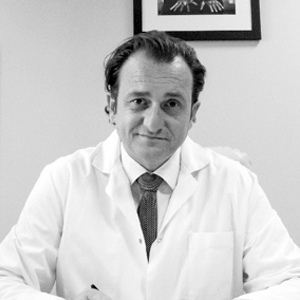
Une équipe pluridisciplinaire
Radiologues interventionnels, chirurgiens, anesthésistes, pathologistes, biologistes et ingénieurs : le LIIE réunit ces expertises autour d'une recherche appliquée et translationnelle.
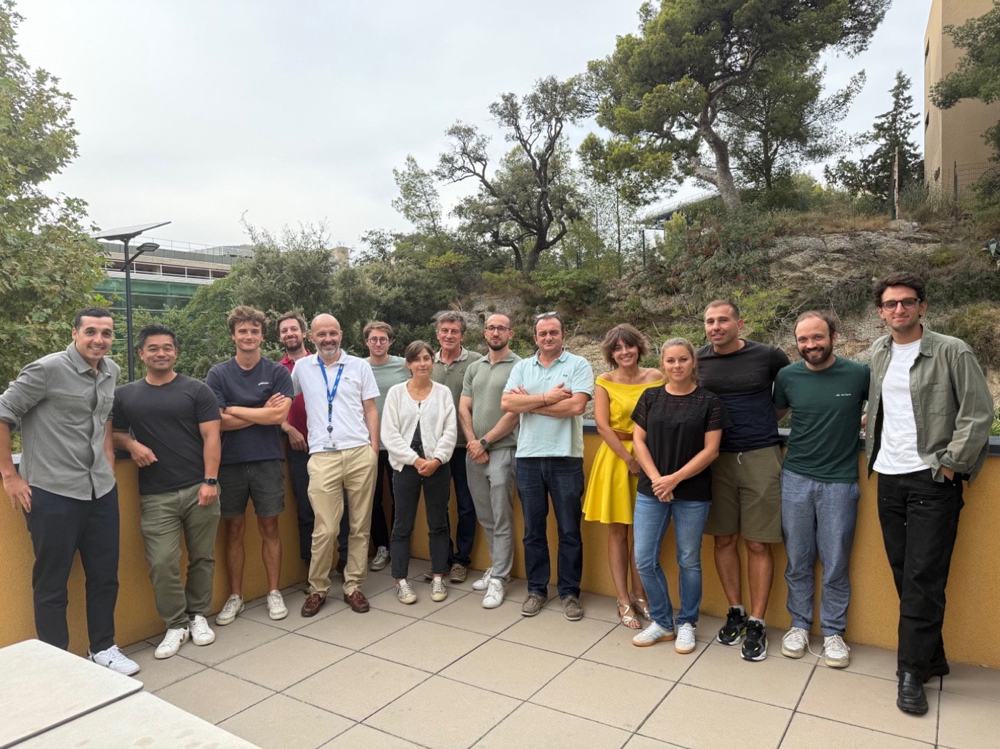
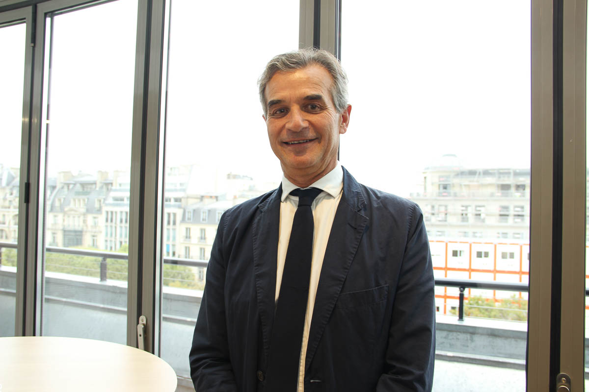
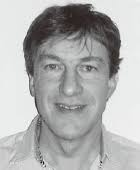
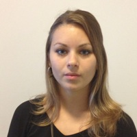
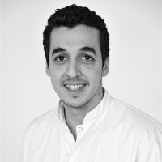
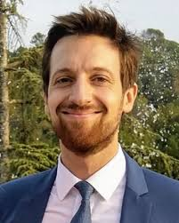
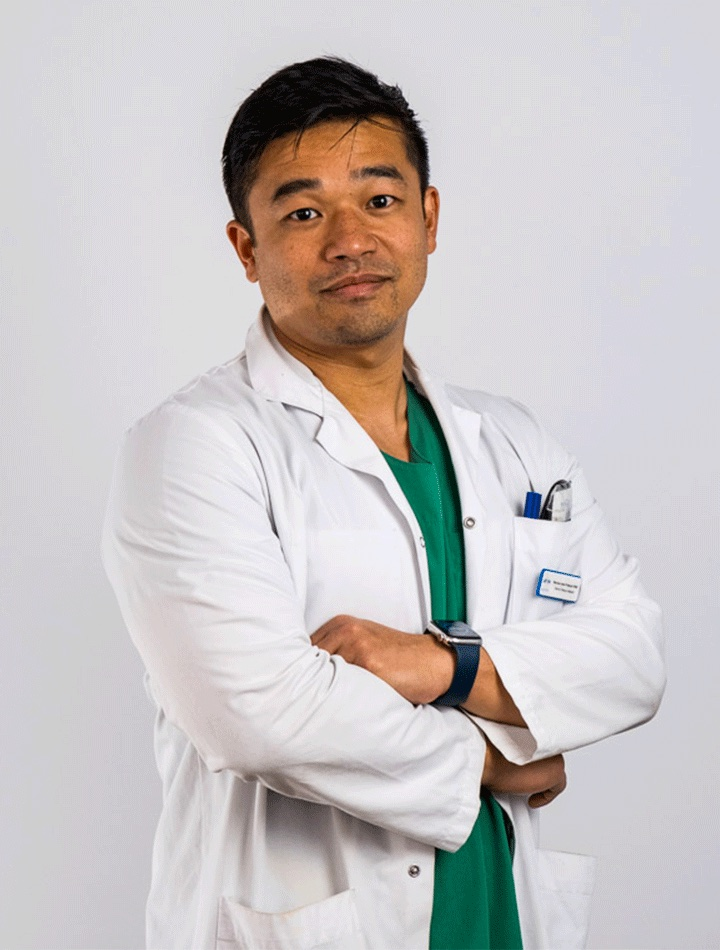
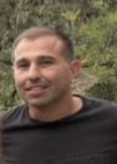
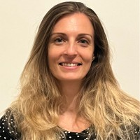
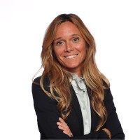
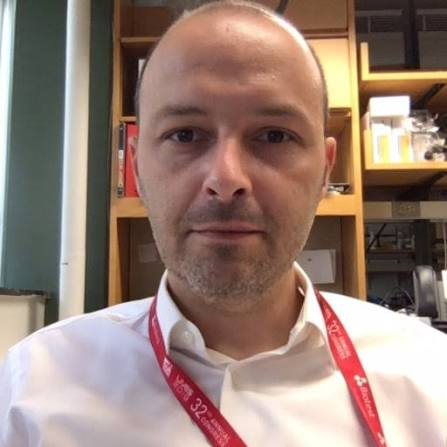
CB
AH
Masters 2 & thésards
Le laboratoire accueille chaque année des étudiants de M2 et des doctorants, inscrits dans les projets du LIIE.
Masters 2
27 étudiants · depuis 2016- 2026
- 2026
- 2026
- 2026
- 2025
- 2025
- 2025
- 2024
- 2024
Archives M2 · 2016–2023+
- 2023
- 2023
- 2023
- 2022
- 2021
- 2021
- 2021
- 2020
- 2020
- 2019
- 2018
- 2018
- 2016
- 2016
Palen · Guilbaud · Delmarre · Barral · Scemama
Première vague M2 du laboratoire.
Thèses
22 doctorants · depuis 2011- 2025
- 2025
- 2025
- 2025
- 2023
- 2021
- 2021
- 2020 → 2024
- 2020 → 2023
Thèses obtenues · 2011–2022+
- 2019 → 2021
- 2018 → 2022
- 2017 → 2022
- 2017 → 2024
- 2013 → 2015
- 2013 → 2017
- 2012 → 2016
- 2012 → 2016
- 2011 → 2013
Liste actualisée en avril 2026. Pour toute demande de stage ou d'encadrement, contactez le laboratoire.